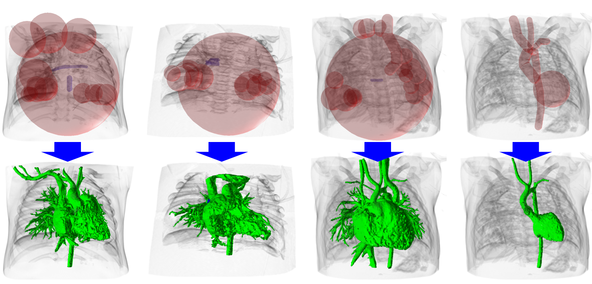

Spatially Controllable Region Growing for Segmenting Heart Chambers
Takashi Ijiri 1&2, Shogo Tsuruoka 3, Hiryu Kamoshita 3, Akira Hirabayashi 3, Shin Inada 2&4, Isao Shiraishi 2, Ken-ichi Kurosaki 2, Kazuo Nakazawa 2&4
1. Shibaura Institute of Technology, 2. National Cerebral Cardiovascular Center, 3. Ritsumeikan University, 4. Morinomiya University of Medical Sciences.
Abstract.
Segmentation of computed tomography (CT) images has provided promising methods of
constructing precise 3-dimensional heart models. However, the process is labor
intensive, because heart regions such as cardiac chambers and blood vessels
have similar intensities and exist within a small space. In this paper, we
present a tool to efficiently segment cardiac chambers and blood vessels.
We extend traditional region growing to be spatially controllable. A user
places multiple seeds, each having a bounding area and a threshold, and our tool
“grows” regions around each seed independently within its bounding area.
To efficiently specify the bounding area, we propose two types of seeds
(i.e., sphere and cylinder). We also provide a negative seed that generates
fixed background to avoid over-extraction errors. We compared our tool with
a traditional scissor tool and confirmed that ours significantly reduced the
time required for a segmentation task. We also present segmentation results
of CT images of hearts having congenital diseases to illustrate the feasibility
of our tool.
Materials
paper
@article{ijiri2020abe,
title={Spatially Controllable Region Growing for Segmenting Heart Chambers},
author={Takashi Ijiri and Shogo Tsuruoka and Hiryu Kamoshita and Akira Hirabayashi and Shin Inada and Isao Shiraishi and Ken-ichi Kurosaki and Kazuo Nakazawa},
journal={Advanced Biomedical Engineering},
volume={9},
number={ },
pages={172-180},
year={2020},
doi={10.14326/abe.9.172}
}
